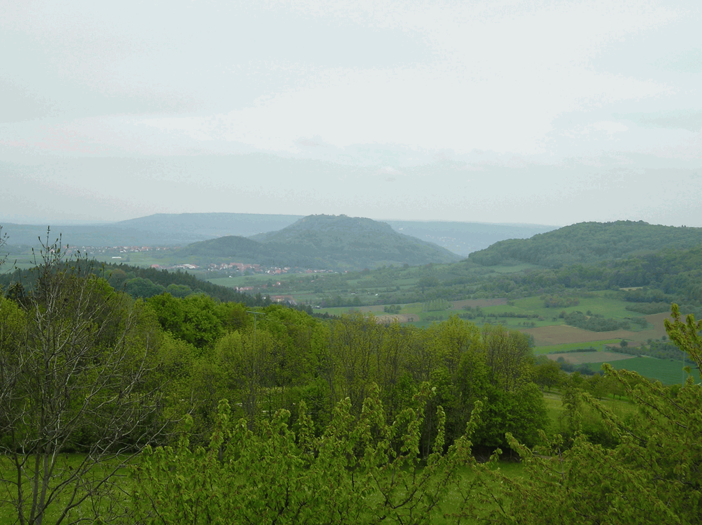
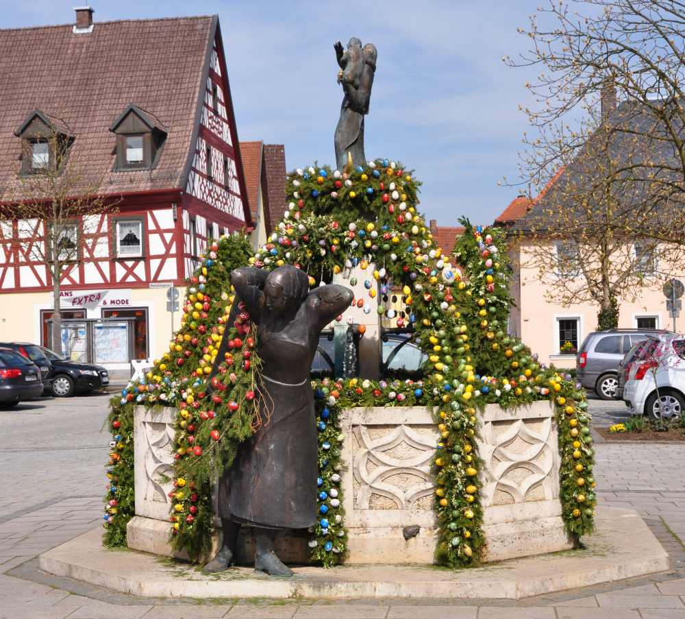
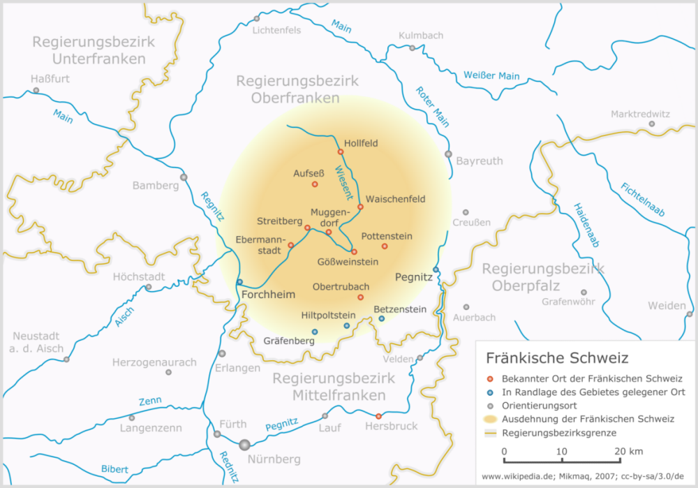
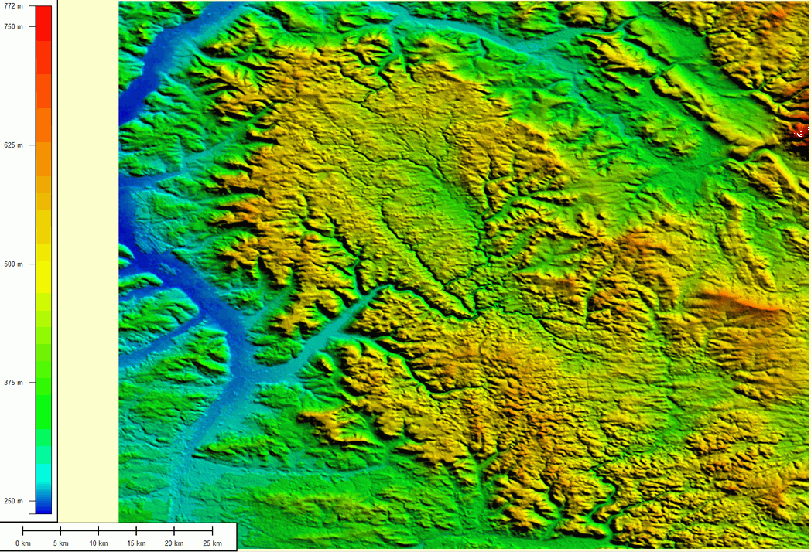

Objekte im Raum

Wie setzen wir in der Geographie am einfachsten und effizientesten die Abstraktion unserer Weltsicht um? Prinzipiell kann die geographische Repräsentation von Raum mit Hilfe zweier unterschiedlicher Konzepte durchgeführt werden: Zum einen können eindeutige Objekte identifiziert werden, sogenannte diskrete Objekte. Dem gegenüber steht das Konzept der kontinuierlichen Räume oder Felder. Im Prinzip sind diskrete (Geo-)Objekte alles, was auf irgendeine Weise abgrenzbar und zählbar ist. Also z.B. Autos, Häuser, Fußgänger, Blumen, Bären, Fußballplätze und so weiter. Felder hingegen beschreiben kontinuierlich die raum-zeitlich sich verändernden Attributwerte oder Merkmalsausprägungen von Räumen.

Beginnen wir mit einem geographischen Begriff von Raum, der uns aus dem Alltagswissen vertraut ist. So kennen viele die Region der Fränkischen Schweiz Wir assoziieren mit solchen Raumentitäten eine mehr oder wenig diffuse gleichwohl abgegrenzte Raumausdehnung (Region) oder die Vorstellung einer "Landschaft" (vgl. Abb. 8). Derart als Entitäten empfundenen Räumen werden häufig auch Attribute wie kulinarische, kulturelle oder freizeitorientierte Aspekte zugeordnet. So ist die Fränkische Schweiz sowohl für ihre Weine und lokalen Biere bekannt aber auch beispielsweise für ihre Osterbrunnen (vgl. Abb. 9).
Wir wissen auch, dass nicht nur die religiösen oder kulinarischen Vorlieben einer Bevölkerung, sondern auch z.B. die Eigenschaften des Ackerbodens, den sie bewirtschaften, selten homogen räumliche Merkmale ausprägen. Die räumliche Verbreitung dieser Merkmalsausprägungen variiert und ist häufig kontinuierlich. Die Karte der Fränkischen Schweiz versucht dies durch ein radiales Verblassen der Farben im Randbereich zu symbolisieren (Abb. 10).

Ein weiteres sehr eingängiges Beispiel für solche räumlich kontinuierliche Übergänge stellt das Relief dar, denn die Erdoberfläche weist eine quasi-kontinuierlich unterschiedliche Höhe auf (Abb. 11). Selbst der normalisierte Meeresspiegel ist -Windstille vorausgesetzt- aufgrund des Tidenhubs und der Massenanomalien von variabler Höhe. Dennoch ist es üblich, dass für geographische Beschreibungen die Höhe bezogen auf eine bestimmte räumliche Skala vereinheitlicht dargestellt wird.

Diskrete und kontinuierliche Objekte in GI-Systemen
Diskrete Geobjekte sind durch eine klare räumliche Abgrenzbarkeit gekennzeichnet, während räumlich kontinuierliche Ausprägungen zunächst keine eindeutig objektbezogene räumliche Abgrenzbarkeit aufweisen. Diese Regel ist abhängig von der Beobachtungs- oder Interessenskala. Hinzu kommt, dass die binäre Logik computergerechter Datenverarbeitung eine Begrenzung der Informationen notwendig macht. In der Praxis der Geoinformationssysteme werden daher auch kontinuierliche Felder wie räumlich abgegrenzte Objekte behandelt also -unter Berücksichtigung einer (für die Fragestellung) geeigneten Skala- in diskrete Raumeinheiten aufgeteilt. Der wesentliche Unterschied zu dem Konzept der diskreten Objekte im leeren Raum ist, dass diese mit bekannter Position in einem ansonsten leeren Raum existieren, während in diskrete Objekte zerlegte Kontinua diesen Raum lückenlos und überschneidungsfrei mit ihren Eigenschaften abbilden und beschreiben.
Abstraktion für Einsteiger
Betrachten Sie das unten stehende Luftbild (Abb. 12) und überlegen Sie, wie Sie die Repräsentation dieses Raumes vornehmen würden. Erfassen Sie folgende Merkmale :
- Landnutzung in Form von Landnutzungsarten
- Straßennetz
- Bebauungsfläche
 als Beispiel eines zu repäsentierenden Wirklichkeitsauschnitts. Es wird vernachlässigt, dass ein Luftbild selbst bereits eine Repräsentation der Wahrnehmung des Fotographen ist") Abbildung 12: Luftbild des Felsengarten Sanspareil (Fränkische Schweiz) als Beispiel eines zu repäsentierenden Wirklichkeitsauschnitts.
Es wird vernachlässigt, dass ein Luftbild selbst bereits eine Repräsentation der Wahrnehmung des Fotographen ist (Presse03 2009)
Abbildung 12: Luftbild des Felsengarten Sanspareil (Fränkische Schweiz) als Beispiel eines zu repäsentierenden Wirklichkeitsauschnitts.
Es wird vernachlässigt, dass ein Luftbild selbst bereits eine Repräsentation der Wahrnehmung des Fotographen ist (Presse03 2009)Schreiben Sie sich in Stichpunkten die nötigen Abstraktionsschritte und Ihre konkrete Umsetzung auf. Betrachten Sie im Anschluss erneut den Ausschnitt des Stadtplans von Marburg. Welche Geoobjekte können Sie durch kartographische Repräsentation identifizieren? Welchem der zuvor vorgestellten räumlichen Repräsentationskonzepten ist diese Form der Darstellung zuzurechnen?
Bearbeiten Sie...
- Ist eines der Konzepte vorteilhafter als das andere? Wenn ja warum? Wenn nein, warum nicht? Erstellen Sie eine Tabelle, die Pro und Kontra für wichtige räumliche Merkmale auflistet.
- Welchem Konzept ist die Fotografie zurechenbar?